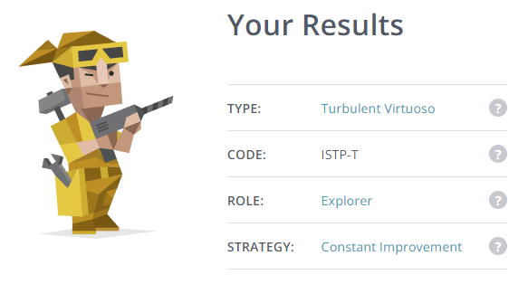

Personal Profile

ISTP personality
The Explorer Role
Improvement Strategies
• Learning style test:
The Visual ISFJ
• Big Five Personality test:
The Five Personality Dimensions
• What do the results of these tests mean for you?
These results can provide a unique perspective and approach particularly when brainstorming ideas with a team, communication and undertaking tasks. It can be important to understand strengths but also weaknesses or faults to reduce risk, learn new behaviours and build cohesion with others to maximise team performance.
This should be taken into account when forming a team to further bolster and improve on individual strengths in order to excel and engage with the team at the highest potential, to have a team that can absorb and deflect from individual weaknesses with their own unique strengths and to ensure a diverse and multi-faceted range of different cultures and backgrounds that can be applied and shared with the team so that all members can learn from other experiences and perspectives.